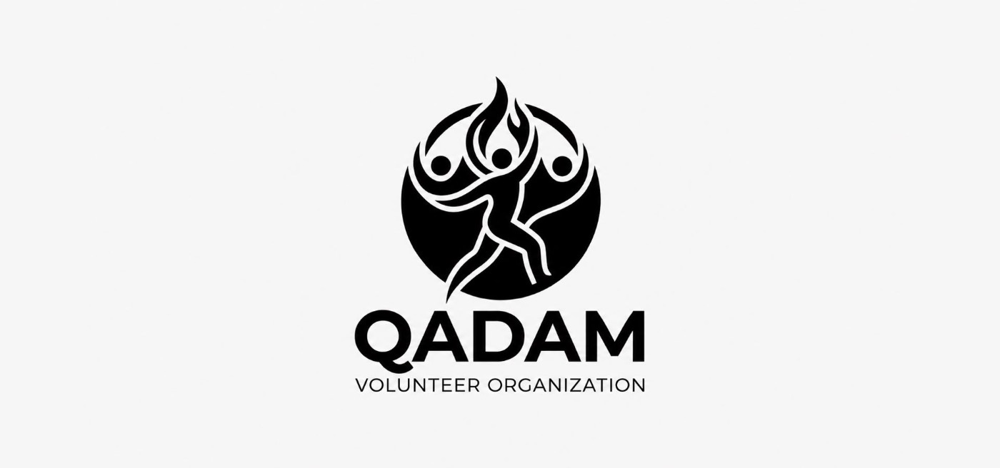

Youths · сообщества Астаны → Волонтёрство
Волонтёрство
Объединяем волонтёров для участия в крупных международных, культурных, спортивных и образовательных мероприятиях.

Кімдер келе алады?
Белсенді, жаңа тәжірибе мен ортаға қызығушылық танытатын жастардың барлығын күтеміз.
Алғашқы кездесу қалай өтеді?
Алғашқы кездесуде бір-бірімізбен танысып, Qadam туралы, алдағы жобалар мен мүмкіндіктер туралы сөйлесеміз.
Жалғыз келуге бола ма?
Әрине! Таныстарың болмаса да, жалғыз келе бер — жаңа адамдармен бірге танысып, Qadam-ның бір бөлігі боласың. 🤍
Данные проверены: 1 октября 2026